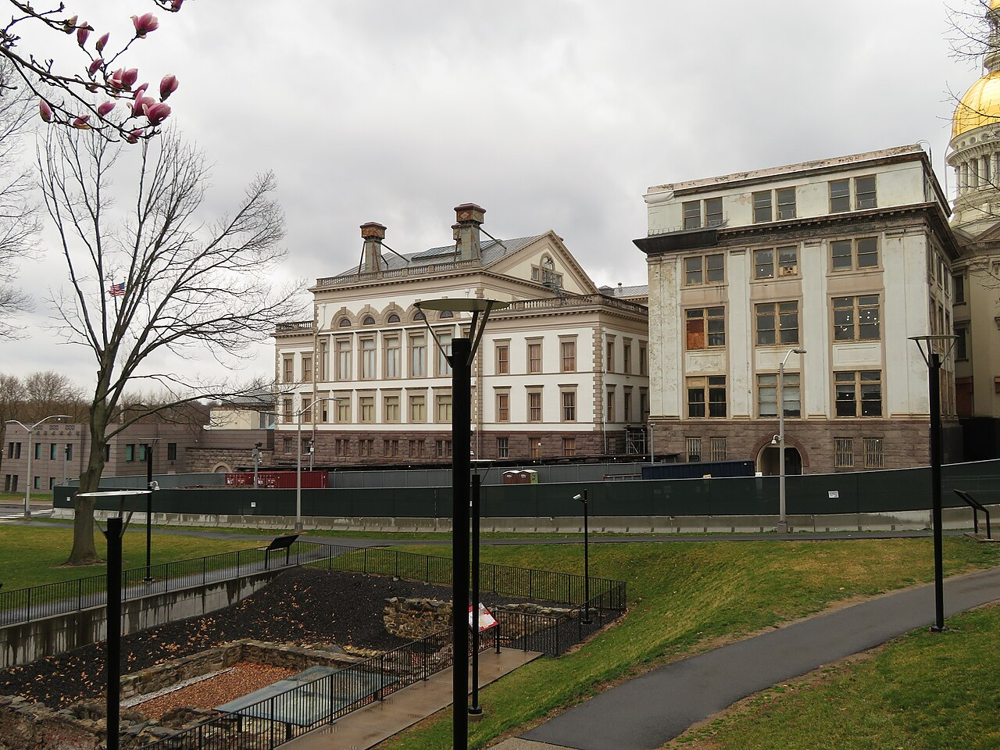

Trenton backgrounder · 16 October 2026 · Back to the section

Trenton taxes property more heavily than any other town in Mercer County, yet it still depends on the state for about half of its main operating revenue. The reason is largely structural, and much of it follows from Trenton's role as the capital: a large part of the city's land belongs to the state, the county, schools, churches and charities and is exempt from tax, so a poor population and a small commercial base carry the cost of a capital city. The test used here is whether city and state policy make it easier for private people and businesses to invest on their own. By that test the record is poor. High taxes, an aging water system, crime and population loss have discouraged private investors, although some private projects have gone forward. Every figure below was checked against a second, independent source, or it is marked unconfirmed.
Trenton's introduced budget for calendar year 2026 totals $298.4 million including grants, up from $281.3 million in 2025. Salaries and wages are the largest expense, at about $120.6 million, and debt service is about $18.2 million. The property tax for municipal purposes was budgeted at about $85.6 million, less than a third of the budget.
After the state reduced the city's aid (see below), the Council adopted an amended budget on 15 September. Unconfirmed: one report of that meeting quotes a city official giving the amended total as $315.4 million.
The $298.4 million total and its parts come from two city documents, not from an independent source; the state approved the budget, which makes them reliable but not independently confirmed.
Sources: City budget presentation, April 2026 · City budget document (state format) · Citizen Portal report of 15 Sep meeting
Trenton receives Transitional Aid, a program of the state Department of Community Affairs (DCA) for distressed cities. A city that takes it must accept state oversight of its finances under a memorandum of understanding. For 2026 the city asked for $59 million and received $57,318,832. It also receives $10 million in Capital City Aid, a payment that recognizes the state's tax-exempt presence in the capital.
The DCA cut about $1.7 million from the city's request because the introduced budget did not raise the tax levy, and it required a 2 percent levy increase as a condition of approval. Moody's estimates that four forms of state aid (Transitional Aid, ordinary state aid, Capital City Aid and a state payment in lieu of taxes) make up half of the city's main operating revenue in 2026. Moody's writes that without this support the city 'would be highly challenged to manage its budget.'
Unconfirmed: the city says a proposed addendum to the memorandum would require a tax levy increase of at least 3.5 percent in 2027 and later years. This comes from the city's own statement, as reported by one outlet. Also unconfirmed: Capital City Aid was created in 2004, reached $37.5 million in fiscal year 2008, and was eliminated in fiscal year 2011 (NJ Spotlight, 2019, only).
Sources: DCA Transitional Aid awards · Peterson's Breaking News of Trenton · Moody's rating action, 1 May 2026 · NJ Spotlight News, May 2026 · NJ Spotlight News, 2019
New Jersey publishes two rates. The general rate is applied to a property's assessed value to compute the bill. The effective rate adjusts for how far assessments lag behind market value, so it allows a fair comparison between towns.
In 2025 Trenton's general rate was $5.890 per $100 of assessed value and its effective rate 3.468 percent, the highest in Mercer County. The comparable effective rates were 2.690 percent in Ewing, 2.434 percent in Hamilton, 2.376 percent in Lawrence, 2.080 percent in West Windsor and 1.814 percent in Princeton. The owner of a house worth $300,000 at market value would thus pay roughly $10,400 a year in Trenton, $7,300 in Hamilton and $5,400 in Princeton (approximate figures computed from the effective rates).
Of Trenton's general rate, $3.758 went to the city itself, $1.148 to the schools and $0.878 to the county. Trenton's assessments stood at 60.13 percent of market value. The city set a municipal rate of 3.781 for 2026, an increase of about 2 percent.
Sources: NJ Treasury, 2025 general and effective tax rates · NJ Treasury, 2025 abstract of ratables, Mercer · NJTaxRecords summary
Trenton's taxes are high partly because it is the capital. The State of New Jersey owns a large part of the city, especially downtown, and state property pays no property tax. The rest of the city's taxpayers must cover the cost of streets, police and fire service used by the roughly 20,000 state employees who work in Trenton each day.
How much is exempt. According to the city's 2025 budget document, taxable property was assessed at $2.207 billion on 1 October 2024, and exempt property at $2.723 billion, which is 123 percent of the taxable base. Public property (state, county, city and federal) made up $1.804 billion of the exempt total, public schools $238 million, churches and charities $185 million, and other exempt property $460 million. The city's 2024 application for state aid says the state alone owns 'nearly one quarter of the value of all property in the City,' and the city said in 2025 that about 52 percent of its parcels are not taxable.
How much land the state holds. The city's mayor told the Legislature in 2019 that 'more than one third of all that land in Trenton is owned by the State,' and NJ Spotlight reported the same year that state buildings and parking lots cover about a third of the city, rising to about half with other exempt owners. A Harvard study in 2025, however, put state ownership at about 10 percent of the city's land and county ownership at 3 percent. The figures differ because they measure different things (land area, parking lots, value) and come from different years; the share of land is therefore unconfirmed.
What the state pays. The state does not pay property tax, but it makes two kinds of payment. The first is Capital City Aid, set by state law in 2019 at not less than $10 million a year, to be used only to reduce the municipal tax levy. The second is a payment in lieu of taxes on certain state properties, budgeted by the city at $13.6 million for 2026. The city estimates that if the state paid the municipal tax on its property, the city would receive about $40 million a year (its 2024 aid application) or about $45 million (the mayor in 2019). On these figures the state's payments cover roughly half of the tax its property would owe. The city also noted that the state recently bought the Taxation Building, formerly the city's single largest taxpayer, which removed it from the tax rolls in exchange for a payment in lieu of taxes.
History. Capital City Aid began in 2004, reached $37.5 million in fiscal year 2008, and was eliminated in fiscal year 2011, when Trenton was moved to Transitional Aid; it was restored at $10 million in 2019. Transitional Aid is a separate program for distressed cities and is not a payment for state land, although the city argues that part of it should be treated as one.
Confirmed by two independent sources: Capital City Aid of at least $10 million a year (state law and press; $10 million in 2026 by the city budget and Peterson's); the tax rates in part 3 (two Treasury tables and NJTaxRecords). Unconfirmed: the assessed values of exempt property and the state's $13.6 million PILOT come only from city documents; the estimates of $40 million and $45 million in forgone tax are the city's own; the share of land owned by the state is disputed (one third versus 10 percent); the history of Capital City Aid from 2004 to 2011 comes from NJ Spotlight only.
Sources: City of Trenton, CY2025 user-friendly budget · City's CY2024 Transitional Aid application (DCA) · City of Trenton, July 2025 (52% of parcels) · P.L. 2019, c.138 (Capital City Aid law) · Insider NJ, May 2019 (mayor's testimony) · NJ Spotlight News, 2019 · City budget presentation, April 2026 (state PILOT) · Peterson's Breaking News (2026 Capital City Aid) · Harvard study, 2025
Taxable property was assessed at about $2.2 billion, which the state equalizes to about $3.67 billion in market value. Residential property makes up about 60 percent of the taxable base, commercial property about 31 percent, apartments about 5 percent and industrial property under 3 percent. The last citywide revaluation took effect for the 2017 tax year, after a long period without one; assessments have since fallen to about 60 percent of market value, which is why the general rate is so much higher than the effective rate.
Unconfirmed: the breakdown of the taxable base by class comes only from the city's budget document. The report that the revaluation before 2017 was in 1992 comes from one source.
Sources: City CY2025 user-friendly budget · NJ Treasury abstract (60.13% ratio) · Mayor Jackson statement on the revaluation · Appraisal Systems Inc. (revaluation firm)
A payment in lieu of taxes (PILOT) replaces the regular property tax on a property, usually for a fixed number of years. In its 2026 budget the city expects $13.6 million in PILOT payments from the state for state property and $3.1 million in PILOT payments from commercial properties. The commercial figure is small compared with the $85.6 million raised by the regular municipal tax, which suggests that abatements have not drawn a large volume of private development into the city.
Unconfirmed: both PILOT figures come only from the city's budget. I did not find a published list of individual abatements or their total value.
Sources: City budget presentation, April 2026
Trenton Water Works, owned by the city, serves Trenton and parts of Hamilton, Ewing, Lawrence and Hopewell. In October 2022 the state Department of Environmental Protection placed it under an administrative order for failure to operate and maintain the system, and sent in an outside oversight contractor. In July 2025 the department told the city that the utility had experienced 'backsliding' on critical issues and shifted its role toward enforcement and capital planning.
The utility's capital plan for 2024 to 2033 totals about $763 million, including $175 million to replace about 20,000 lead service lines. In January 2026 it sought its first rate increase since 2020. Moody's writes that the city 'would have significant difficulty funding this capital plan on its own' and expects the state to pay for much of it. The city has about $210 million of long-term debt outstanding.
Unconfirmed: the cost of $175 million and the count of 20,000 lead lines come from the utility, as quoted by NJ.com only.
Sources: NJDEP oversight page · NJDEP letter, July 2025 · NJ.com, January 2026 · TWW capital plan · Moody's, 1 May 2026 · NJ Spotlight News, May 2026
On 1 May 2026 Moody's raised Trenton's rating one step, from Baa2 to Baa1, which is investment grade but in the lower part of that range. Moody's attributed the upgrade to 'significant support from the State of New Jersey,' not to growth in the city's own economy. It listed 'expansion of economic activity in the city sufficient to produce revenues enabling the city to be more self-sufficient' as a factor that could lead to a further upgrade.
Unconfirmed: I found no current S&P rating for Trenton. One financial website lists an S&P rating of BBB-, but its other figures are out of date, so the S&P rating is not reported here.
Sources: Moody's rating action, 1 May 2026 · NJ Spotlight News, May 2026
Taxes. The effective rate is about 40 percent higher than in Hamilton and nearly double that of Princeton. For a commercial or apartment building, whose value depends on net income, this difference directly reduces what an investor can pay. The mayor himself told NJ Spotlight in 2019 that the city's tax levy 'is one of the impediments to residential and commercial redevelopment,' and the Harvard study of 2025 reached the same conclusion.
State dependence and rising levies. The state now requires the city to raise its levy each year as a condition of aid. The city's own five-year projection in its 2026 budget shows the municipal rate rising from 3.781 to 6.603 by 2031 if nothing else changes (city projection, not independently confirmed). An investor buying a building for twenty years must take that risk into account.
Poverty and population. The city has about 91,500 residents, more than it had in 2010 but far below its peak of about 128,000 in 1950 (Census history; the peak figure was not independently checked). Median household income is $52,537, and only 16.2 percent of adults hold a bachelor's degree, which limits the market for new retail and higher-priced housing.
Crime. Trenton's homicide rate remains among the highest of the large cities in the state, although shootings fell in 2025 along with the rest of New Jersey. Unconfirmed: the sources disagree on the 2025 count; one reports 16 homicides and another gives a rate of 15.4 per 100,000, which implies about 14.
Water and services. A utility under state order, with a capital need of three-quarters of a billion dollars, raises doubts about future water rates and reliability for any business that uses much water.
Vacant property and land assembly. The city's own sale of 28 abandoned buildings shows the scale of the vacancy problem. The city's Trenton250 master plan names fragmented sites, old industrial buildings without modern access, vacancy and crime as obstacles to redevelopment.
Schools and permits. Developers and residents often cite the public schools as a reason families leave, and the city's permitting process has been criticized; I did not find recent, checked data on either, so these are listed as reported concerns only.
Sources: NJ Spotlight News, 2019 · Harvard study, 2025 · City budget, five-year projection · Census QuickFacts · TownTapestry (16 homicides) · J. Shjarback (rate of 15.4) · Trenton250 economic development report
Helps private initiative: selling vacant city-owned buildings to private buyers who will repair them; selling unused land at Enterprise Avenue to a private firm; a new film permit ordinance (September 2026) that simplifies permits for productions; and the police department's state accreditation and lower shooting numbers, if they last.
Works against private initiative: the state now requires the city to raise its tax levy each year as a condition of aid, and the city's own projection shows the municipal rate rising sharply by 2031. That is the opposite of a tax cut. Assessments have not been revalued since 2017, so the tax burden is distributed by values that are nine years old. The water utility's capital plan will require higher rates.
Neutral or politically driven: grants that pay for particular projects (the Marriott purchase, the Rojo's grant, subsidized senior housing) may produce buildings, but they do not lower the cost of investing for anyone else, and they do not test whether private demand exists.
Unconfirmed: the film ordinance comes from one outlet (Trenton Journal) based on the city's release. The police accreditation comes from the city only.
Sources: City property program release · Trenton Journal (film ordinance) · Peterson's (levy condition) · City budget, five-year projection
Unsubsidized: Meridian Furniture, a company founded in Trenton, bought 10 acres on Enterprise Avenue from the city for $1 million in September 2026 to build a warehouse of about 220,000 square feet. No subsidy has been reported. The Trenton Ironhawks, a privately owned hockey team, begin play in October 2026 (in a county-owned arena). Hanover Creative Gallery, a citizen-run art space on East Hanover Street, opened in March 2026. Private buyers are paying more for houses: the city reports the average sale price up 5.8 percent in 2026 (city figure, unconfirmed).
Subsidized, and therefore not natural revival by this standard: Rojo's Roastery is investing about $933,000 to reopen the former downtown Starbucks, but a state agency grant of up to $493,000 covers about half. The empty Marriott would be bought with a $4 million state grant before a private developer, Tetrabilt, takes it over. The conversion of the office tower at 240 West State Street to apartments relies on low-income housing tax credits (status unconfirmed).
The pattern is that private money comes on its own mainly where it does not depend on the city's tax burden falling on residents and shops: cheap land at the city's edge, a regional sports team, and small cultural spaces run by volunteers. Downtown retail and housing have needed public money to move.
Sources: City of Trenton · Trenton Journal (Rojo's) · NJ.com (Marriott) · Central Jersey Media (Ironhawks) · Real Estate NJ (240 West State) · Fennelly Associates (240 West State)